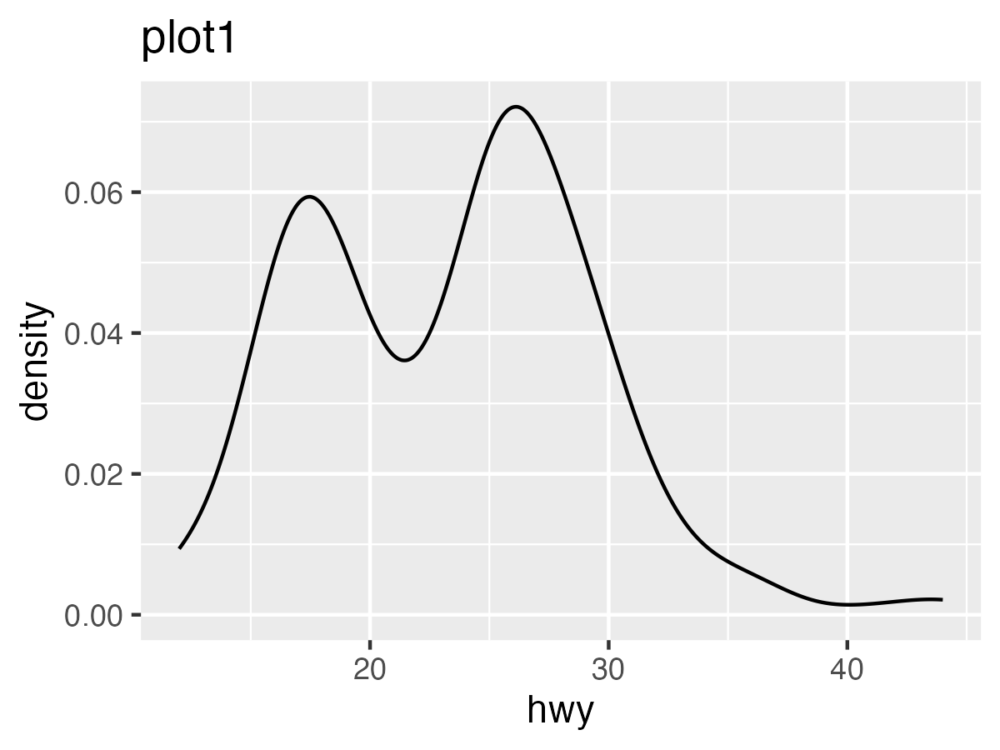

suppressPackageStartupMessages(library(ggplot2))
path_dir <- fs::dir_create("my_plots")
plots <- c("plot1", "plot2", "plot3")
purrr::walk(plots, \(plot) {
p <- ggplot(mpg, aes(x = hwy)) + geom_density() + labs(title = plot)
ggsave(fs::path(path_dir, paste0(plot, ".png")), p, "png",
width = 4, height = 3, units = "in")
})Quarto snippets
r
quarto
I’m usually re-using the same old Quarto templates. These are syntax and patterns I like to reference.
Single Quarto document template
These items, along with session info at the bottom of the document, are what I usually use for an analysis in a single notebook. One could ditch the single document workflow and instead use a _quarto.yml in the root of the project, but for speed and low complexity, I like keeping things self-contained when possible.
Frontmatter
title: "Title"
subtitle: "Subtitle"
author: "Author"
date: "2023-11-28"
format:
html:
css: assets/custom.scss
code-overflow: scroll
code-tools: true
embed-resources: true
highlight-style: github
standalone: true
theme:
light: lumen
toc: true
toc-expand: true
toc-depth: 4
toc-location: left
toc-collapsed: false
grid:
sidebar-width: 500px
body-width: 1000px
margin-width: 500px
gutter-width: 1.5remCSS
/*-- scss:rules --*/
// size of code font
pre>code.sourceCode {
font-size: 1em;
}Knitr chunk defaults
Set as the first executable chunk of the document
#| include: false
loadNamespace("knitr")
knitr::opts_chunk$set(comment = "", fig.align = "center", message = FALSE,
out.width = "80%", dpi = 150, results = "hold", fig.show = "hold",
warning = FALSE)Libraries
Load libraries, load functions in their own environment, set a path for any output, set any constants for the analysis
#| code-fold: true
#| message: false
library(conflicted)
library(dplyr)
library(tibble)
library(stringr)
library(forcats)
library(readr)
library(tidyr)
library(readxl)
library(writexl)
library(purrr)
library(ggplot2)
library(ggnewscale)
library(ggpubr)
library(ggsignif)
library(RColorBrewer)
library(cowplot)
loadNamespace("fs")
library(Seurat)
library(lisi)
library(harmony)
library(clustree)
# ------------------------------------------------------------------------------
# Source functions, helpers
mk <- new.env()
source_files <- list.files("R", recursive = TRUE, full.names = TRUE)
invisible(lapply(as.list(source_files), \(x) sys.source(x, envir = mk)))
# Set path for this notebook
path_output <- fs::dir_create("output/02")
LOAD_FROM_CACHED <- TRUEShow external functions
Programmatically fill tabset panels
First, create a “panel-tabset”. Something about setting a group can deal with issues of clashing names of the tabs among other tabsets, so I always set a random string.
::: {.panel-tabset group="XXX"}
<!-- markdown headings become tabs -->
:::When using results = "asis" for an R chunk, it will output raw markdown, which makes adding images via markdown format easiest: . There are some workarounds out there where you might actually programmatically add executable code chunks (which might render images themselves), but I find it easy to generate several images first, save them to a directory, and then iterate through those images and render them with markdown syntax:
E.g.,
# Chunk options
# ```{r, echo = FALSE, fig.align = "default", results = "asis"}
# Sometimes I've run into issues with fig.align = "center", which
# I keep as a default, so I unset it just for this chunk
purrr::walk(plots, \(plot) {
cat("##### ", plot, "\n\n") # Set heading level one below parent
cat("), ")\n")
cat("\n\n")
})The images will take up the width of the body of the document. With markdown syntax, you can change the width of the images with something like {width="600px"}

Grid layout large images
For single quarto documents with no left-sidebar, I usually place the table of contents on the left side with the frontmatter toc-location: left. I also have a page layout something like:
grid:
sidebar-width: 500px
body-width: 1000px
margin-width: 500px
gutter-width: 1.5remFor larger images / plots, you can increase the space they take up, overflowing to the right, with some sort of {.column} section, e.g.
::: {.column-screen-inset-right}
:::If they contain other sections marked by :::, increase the number of colons:
:::: {.column-screen-inset-right}
::: {.panel-tabset}
:::
::::Session Info
Here’s how to display a collapsible section for the R session info:
html:
<details style="margin-bottom:10px;">
<summary style="color:black;">
Session info
</summary>R chunk:
#| echo: false
print(sessioninfo::session_info())html:
</details>Session info
─ Session info ───────────────────────────────────────────────────────────────
setting value
version R version 4.2.3 (2023-03-15)
os macOS 14.1
system aarch64, darwin20
ui X11
language (EN)
collate en_US.UTF-8
ctype en_US.UTF-8
tz America/Denver
date 2023-11-29
pandoc 3.1.8 @ /opt/homebrew/bin/ (via rmarkdown)
─ Packages ───────────────────────────────────────────────────────────────────
package * version date (UTC) lib source
cli 3.6.1 2023-03-23 [1] CRAN (R 4.2.0)
colorspace 2.1-0 2023-01-23 [1] CRAN (R 4.2.0)
digest 0.6.33 2023-07-07 [1] CRAN (R 4.2.0)
dplyr 1.1.3 2023-09-03 [1] CRAN (R 4.2.0)
evaluate 0.22 2023-09-29 [1] CRAN (R 4.2.3)
fansi 1.0.5 2023-10-08 [1] CRAN (R 4.2.0)
farver 2.1.1 2022-07-06 [1] CRAN (R 4.2.0)
fastmap 1.1.1 2023-02-24 [1] CRAN (R 4.2.0)
fs 1.6.3 2023-07-20 [1] CRAN (R 4.2.0)
generics 0.1.3 2022-07-05 [1] CRAN (R 4.2.0)
ggplot2 * 3.4.4 2023-10-12 [1] CRAN (R 4.2.0)
glue 1.6.2 2022-02-24 [1] CRAN (R 4.2.0)
gtable 0.3.4 2023-08-21 [1] CRAN (R 4.2.0)
htmltools 0.5.6.1 2023-10-06 [1] CRAN (R 4.2.0)
htmlwidgets 1.6.2 2023-03-17 [1] CRAN (R 4.2.0)
jsonlite 1.8.7 2023-06-29 [1] CRAN (R 4.2.0)
knitr 1.44 2023-09-11 [1] CRAN (R 4.2.0)
labeling 0.4.3 2023-08-29 [1] CRAN (R 4.2.0)
lifecycle 1.0.3 2022-10-07 [1] CRAN (R 4.2.0)
magrittr 2.0.3 2022-03-30 [1] CRAN (R 4.2.0)
munsell 0.5.0 2018-06-12 [1] CRAN (R 4.2.0)
pillar 1.9.0 2023-03-22 [1] CRAN (R 4.2.0)
pkgconfig 2.0.3 2019-09-22 [1] CRAN (R 4.2.0)
purrr 1.0.2 2023-08-10 [1] CRAN (R 4.2.0)
R6 2.5.1 2021-08-19 [1] CRAN (R 4.2.0)
ragg 1.2.6 2023-10-10 [1] CRAN (R 4.2.0)
rlang 1.1.1 2023-04-28 [1] CRAN (R 4.2.0)
rmarkdown 2.25 2023-09-18 [1] CRAN (R 4.2.0)
rstudioapi 0.15.0 2023-07-07 [1] CRAN (R 4.2.0)
scales 1.2.1 2022-08-20 [1] CRAN (R 4.2.0)
sessioninfo 1.2.2 2021-12-06 [1] CRAN (R 4.2.0)
systemfonts 1.0.5 2023-10-09 [1] CRAN (R 4.2.0)
textshaping 0.3.7 2023-10-09 [1] CRAN (R 4.2.0)
tibble 3.2.1 2023-03-20 [1] CRAN (R 4.2.0)
tidyselect 1.2.0 2022-10-10 [1] CRAN (R 4.2.0)
utf8 1.2.4 2023-10-22 [1] CRAN (R 4.2.0)
vctrs 0.6.4 2023-10-12 [1] CRAN (R 4.2.0)
withr 2.5.1 2023-09-26 [1] CRAN (R 4.2.0)
xfun 0.40 2023-08-09 [1] CRAN (R 4.2.0)
yaml 2.3.7 2023-01-23 [1] CRAN (R 4.2.0)
[1] /Library/Frameworks/R.framework/Versions/4.2-arm64/Resources/library
──────────────────────────────────────────────────────────────────────────────